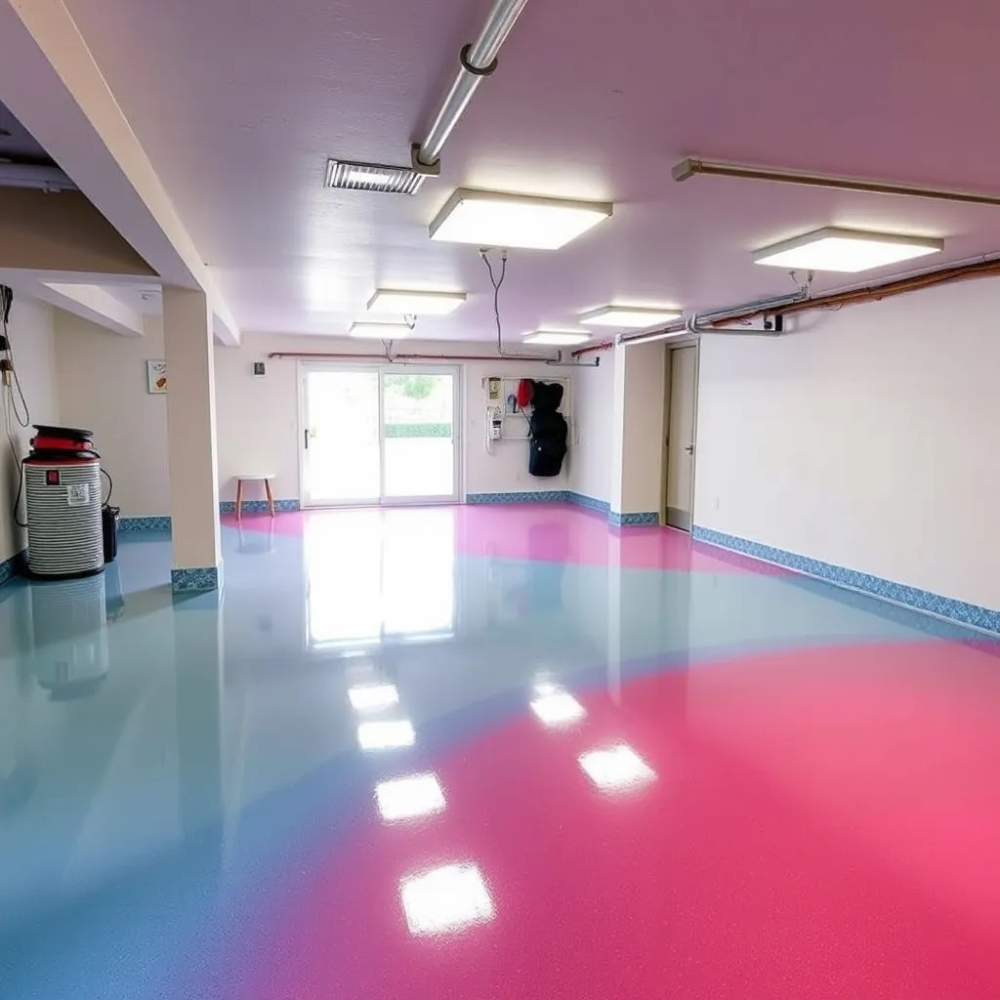
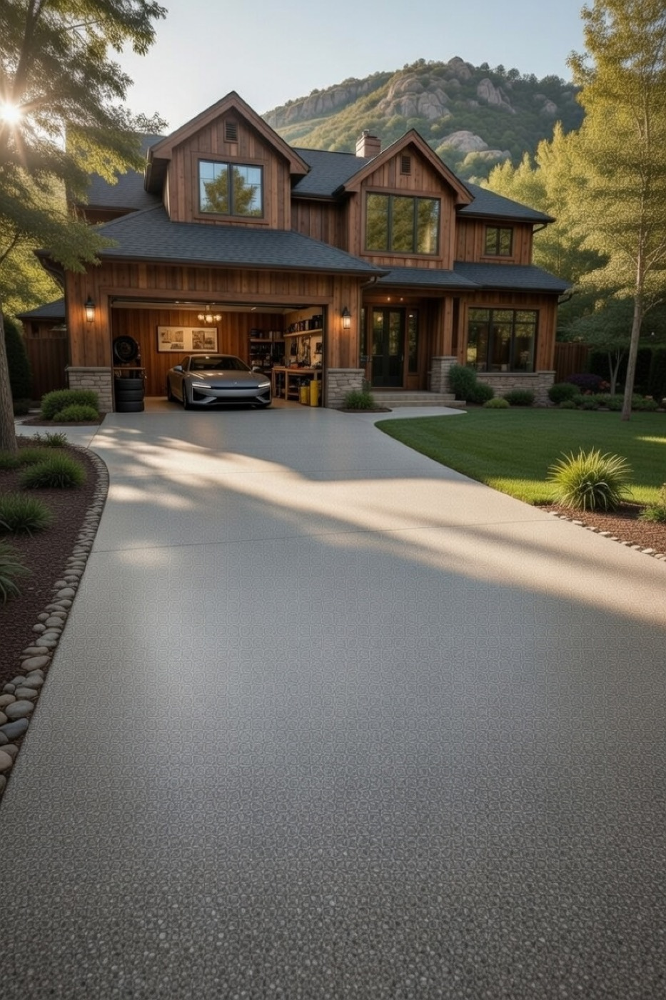
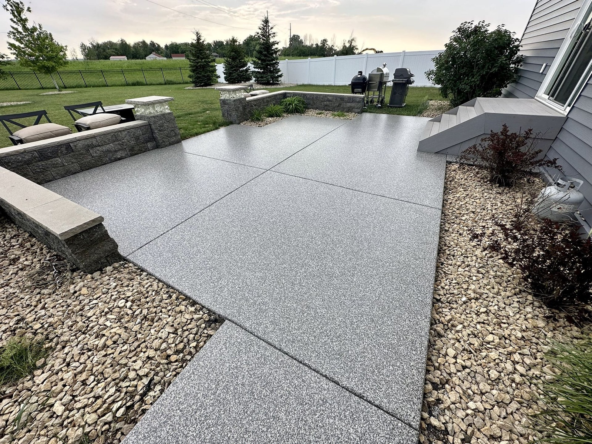
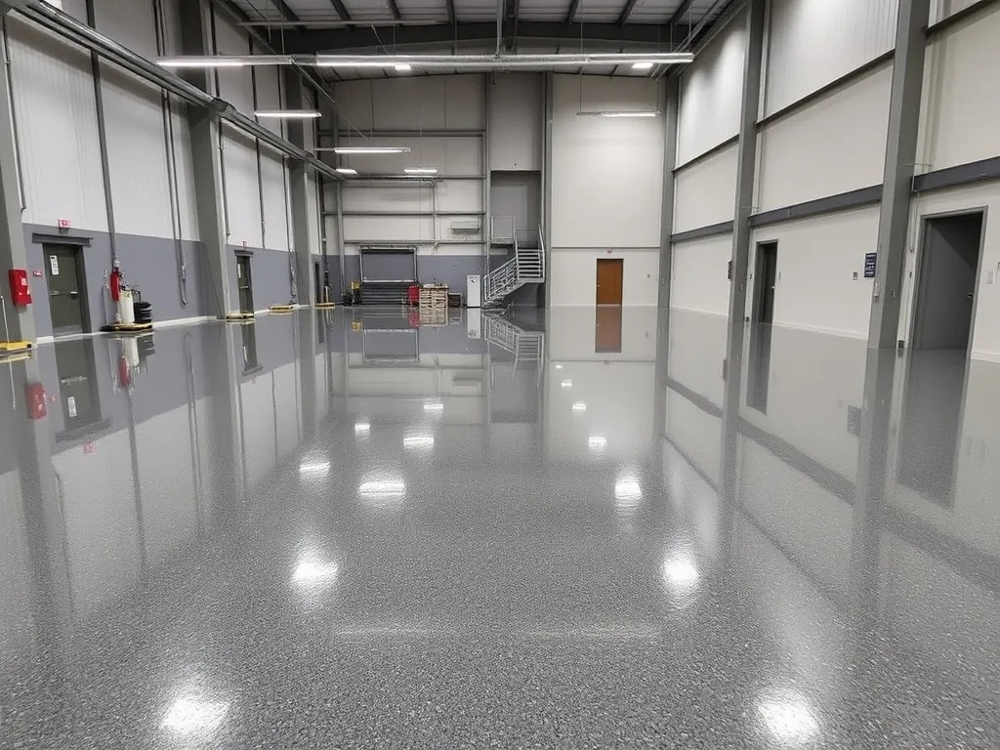
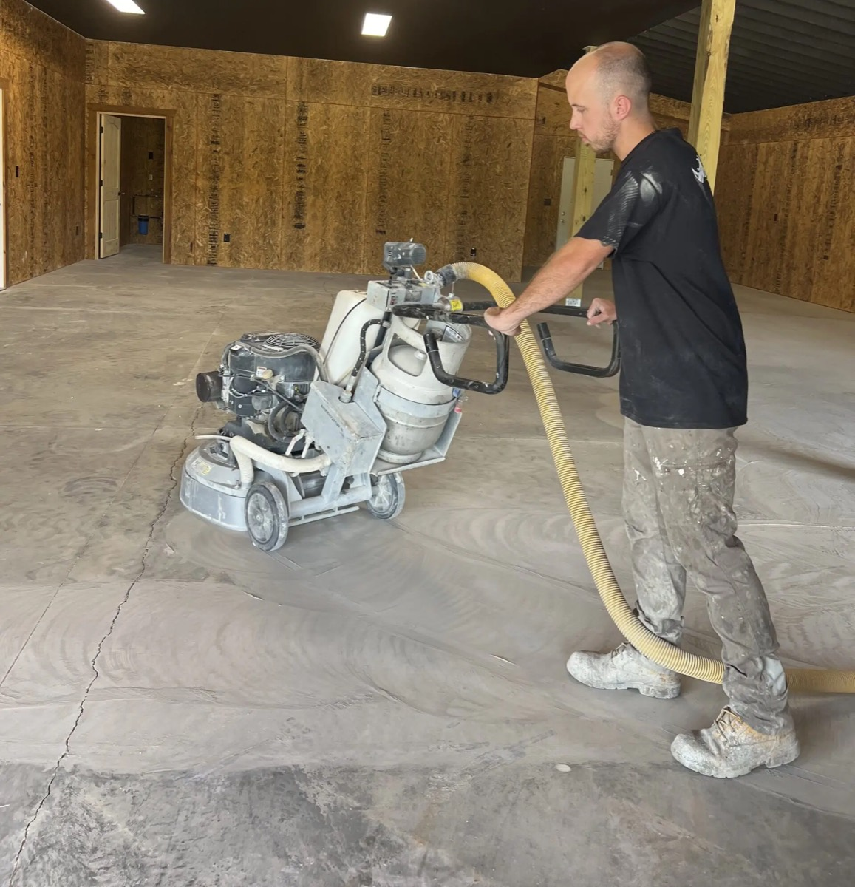
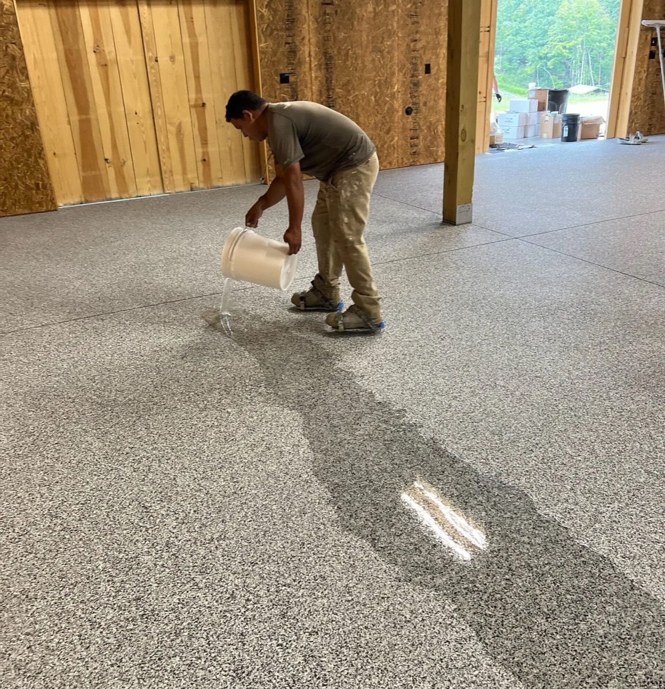

Transform Concrete Into
Surfaces That Shine Forever
Premium epoxy, decorative flake, and polyaspartic floor coatings that turn cracked, dusty concrete into showroom-quality surfaces — built to beat Montana winters for decades.
Elite Coatings. Everlasting Surfaces.
There's something elite about a concrete coating that catches the eye. Kraken Concrete Coatings helps Montana families turn ordinary concrete into luxurious, easy-to-maintain surfaces that elevate the entire property — and shrug off freeze-thaw cycles, hot tires, oil, and road salt.
Coatings For Every Surface
Residential and commercial concrete coatings using professional-grade Citadel Floors products — installed with meticulous prep and zero shortcuts.

Garage Floor Coatings
Showroom-perfect floors that resist oil, hot tires, and Montana winters. Installed in as little as one day.

Driveway Coatings
Weatherproof decorative flake systems that revive cracked driveways and boost curb appeal for decades.

Patio Coatings
Turn patios and pool decks into stunning, slip-resistant outdoor living spaces that handle every season.

Commercial Coatings
High-traffic, slip-resistant, easy-to-clean floors for shops, hangars, restaurants, and warehouses.
We Never Cut Corners
Diamond Grinding
Every floor is mechanically ground — never acid etched — for flawless adhesion that lasts a lifetime.
Crack Repair & Moisture Testing
Complete crack sealing and moisture testing so nothing seeps through. Prep is the foundation of everything.
Base Coat & Full Flake Broadcast
Professional-grade epoxy base with decorative flake broadcast to full rejection — no thin spots, ever.
Polyaspartic Topcoat
UV-stable, crystal-clear finish that won't yellow. Resists hot tires, chemicals, and wear — same-day cure.


Bozeman Homeowners On Kraken
Emanuel and his team did an amazing job on my garage floor. The epoxy coating is flawless, durable, and looks stunning. Montana winters no longer cause stains or cracks. Highly recommend Kraken for quality and professionalism.
Our driveway was in terrible shape, cracked and stained. Kraken's decorative flakes and epoxy coating completely revitalized it. Now it's the highlight of our home, and it withstands Montana weather perfectly.
I wanted a garage that looked like a showroom and could handle our Montana winters. Kraken delivered beyond expectations. The high-gloss epoxy is beautiful, and the surface is resistant to everything. Truly a professional team.
The commercial epoxy floor Kraken installed in our workshop is outstanding. It's slip-resistant, durable, and easy to clean. The team was efficient and precise, ensuring a perfect finish that lasts for years.
We hired Kraken to redo our outdoor patio with decorative flakes and epoxy. The result is stunning and weatherproof. It's become our favorite outdoor space, and we get compliments all the time. Excellent craftsmanship and service.
Our garage needed a serious upgrade to withstand Montana's harsh winters. Kraken's polyaspartic topcoats and meticulous prep work made all the difference. The finish is mirror-like, UV resistant, and installed in a day.
Release The Kraken On Your Concrete
Only a few premium installation slots are left this season. Call or request a free quote — Emanuel will walk your project personally.
(406) 223-9149